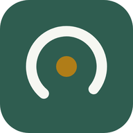

把體重與飲食記錄放到手機桌面，一分鐘完成
用 LINE 點開連結時，開的是 LINE 自己的瀏覽器，它沒有「加入主畫面」這個功能，而且記錄的資料也存不住。 所以第一步一定要先跳出 LINE，改用 Safari（iPhone）或 Chrome（Android）開啟。
下面的步驟會跟著切換。
畫面會用 LINE 內建的瀏覽器打開日課。先不要急著操作，直接看下一步。
在畫面最下方那排工具列，最右邊有個三個點的按鈕。點下去之後選 其他應用程式，再選 Safari。
部分版本的 LINE 是顯示 用 Safari 開啟，看到就直接點。
畫面最上方會出現網址列，下方有一排 Safari 的按鈕，就表示成功跳出來了。
就是那個「方框加一支向上箭頭」的圖示，在螢幕最底下正中央。
選單裡項目很多，需要用手指往上滑一段才會看到。
名稱保持「日課」就可以，不用改。
回到桌面，會出現一個深綠色的圓錶圖示，名字叫「日課」。以後從這裡打開就好，不用再進 LINE。
畫面會用 LINE 內建的瀏覽器打開日課。先不要急著操作，直接看下一步。
直排三個點的按鈕，在螢幕右上角。點下去選 用其他瀏覽器開啟，如果跳出選單就挑 Chrome。
最上方出現 Chrome 的網址列，就表示成功跳出來了。
這次是 Chrome 自己的三個點，位置一樣在右上角。
有些手機顯示的是 加到主畫面，意思一樣。若兩個都沒看到，往下滑找找。
Chrome 會再問一次要不要安裝，按確定即可。
桌面或應用程式列表會出現深綠色的圓錶圖示「日課」。以後從這裡打開就好，不用再進 LINE。
把下面這段訊息複製到 LINE 貼上就好，對方會同時收到 App 和這份手冊。
日課 — 記錄每天的體重和吃了什麼 可以拍照、看趨勢圖，資料只存在自己手機裡，不會上傳。 App： https://kftseng2oo1.github.io/dialy/ 安裝步驟（一分鐘，附圖說明）： https://kftseng2oo1.github.io/dialy/install.html ⚠️ 記得先跳出 LINE 用 Safari 或 Chrome 開， 在 LINE 裡面是裝不起來的。